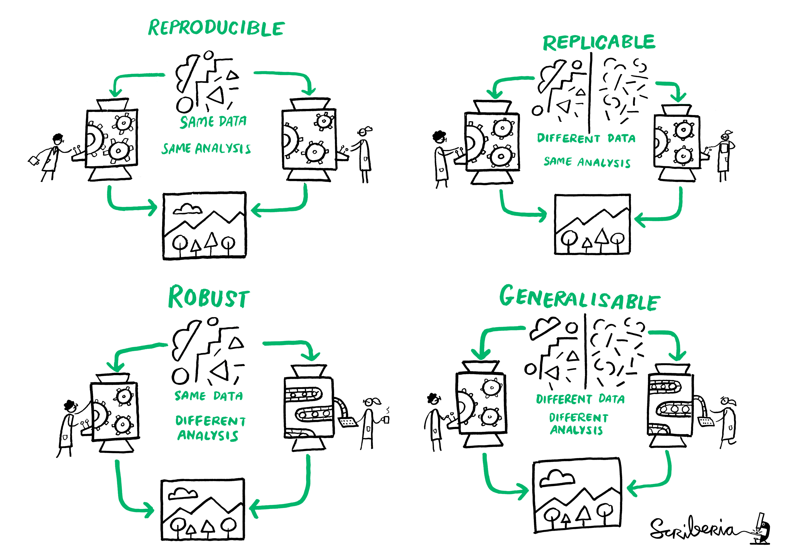

OFFICIAL
Data ethics in practice
Created by Joseph Crispell using the reveal.js framework
My Career
- Zoology
- Pathogen transmission
- Pathogen genomics
- Foreign, Commonwealth and Development Office
Words drawn from: Data Ethics Framework

Improving Cancer mutation panels
ACCURACY
Image credit: Illumina

| Result \ Truth | Positive | Negative |
|---|---|---|
| Positive | True positive | False positive |
| Negative | False negative | True negative |
Variant Call Format (VCF) file specification
##fileformat=VCFv4.3
##fileDate=20090805
##source=myImputationProgramV3.1
##reference=file:///seq/references/1000GenomesPilot-NCBI36.fasta
##contig=<ID=20,length=62435964,assembly=B36,md5=f126cdf8a6e0c7f379d618ff66beb2da,species="Homo sapiens",taxonomy=x>
##phasing=partial
##INFO=<ID=NS,Number=1,Type=Integer,Description="Number of Samples With Data">
##INFO=<ID=DP,Number=1,Type=Integer,Description="Total Depth">
##INFO=<ID=AF,Number=A,Type=Float,Description="Allele Frequency">
##INFO=<ID=AA,Number=1,Type=String,Description="Ancestral Allele">
##INFO=<ID=DB,Number=0,Type=Flag,Description="dbSNP membership, build 129">
##INFO=<ID=H2,Number=0,Type=Flag,Description="HapMap2 membership">
##FILTER=<ID=q10,Description="Quality below 10">
##FILTER=<ID=s50,Description="Less than 50% of samples have data">
##FORMAT=<ID=GT,Number=1,Type=String,Description="Genotype">
##FORMAT=<ID=GQ,Number=1,Type=Integer,Description="Genotype Quality">
##FORMAT=<ID=DP,Number=1,Type=Integer,Description="Read Depth">
##FORMAT=<ID=HQ,Number=2,Type=Integer,Description="Haplotype Quality">
#CHROM POS ID REF ALT QUAL FILTER INFO FORMAT NA00001 NA00002 NA00003
20 14370 rs6054257 G A 29 PASS NS=3;DP=14;AF=0.5;DB;H2 GT:GQ:DP:HQ 0|0:48:1:51,51 1|0:48:8:51,51 1/1:43:5:.,.
20 17330 . T A 3 q10 NS=3;DP=11;AF=0.017 GT:GQ:DP:HQ 0|0:49:3:58,50 0|1:3:5:65,3 0/0:41:3
20 1110696 rs6040355 A G,T 67 PASS NS=2;DP=10;AF=0.333,0.667;AA=T;DB GT:GQ:DP:HQ 1|2:21:6:23,27 2|1:2:0:18,2 2/2:35:4
20 1230237 . T . 47 PASS NS=3;DP=13;AA=T GT:GQ:DP:HQ 0|0:54:7:56,60 0|0:48:4:51,51 0/0:61:2
20 1234567 microsat1 GTC G,GTCT 50 PASS NS=3;DP=9;AA=G GT:GQ:DP 0/1:35:4 0/2:17:2 1/1:40:3
Cattle, possums, and bTB in New Zealand
SAMPLING
Image credit: Wikimedia
{kind=link}

Image credit: Wikimedia
{kind=link}


Cattle, badgers, and bTB in Woodchester Park
REPRESENTATIVENESS

Mapping HIV in Côte d'Ivoire
ANONYMITY
Data source: Data for good
Image source: Demographic Household Surveys

Reproducible data science
{
"title": "Cote d'Ivoire: High Resolution Population Density Maps + Demographic Estimates. Population and Youth (15-24)",
"source": "Facebook",
"url": "https://data.humdata.org/dataset/highresolutionpopulationdensitymaps-civ",
"type": "tif/csv",
"date-of-dataset": "01-07-2019",
"date-accessed": "23-03-2020"
}
BE TRANSPARENT
Image credit: The Turing Way

BE OPEN
Image credit: The Turing Way
BE MORE THAN REPRODUCIBLE
Resources
- Humanitarian Data Science and Ethics Group project planning decision tree
- Open Data Institute data ethics canvas
- Teaching materials for reproducible data science
- The RAP companion - a book about Reproducible Analytical Pipelines
- UK government Data Ethics Framework
- A guide to how to become a better programmer
OFFICIAL